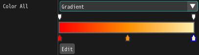
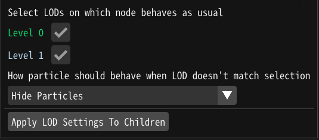
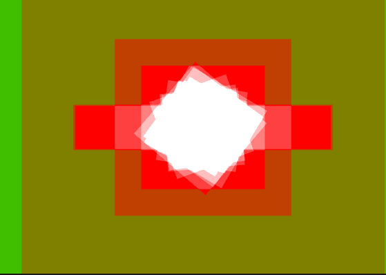

1.70 新機能¶
共通¶
グラディエント¶
グラディエントで色を指定する機能が追加されました。
Level of Detail¶
距離に応じてパーティクルの振る舞いを変更し、エフェクトを軽量化する機能が追加されました。 [by @abvadabra, #820]


回転¶
パーティクルがカメラの方向を向くように回転する機能を追加しました。
ツール¶
オーバードロー表示¶
描画方法として描画回数を表示する表示方法を追加しました。
h264録画¶
録画にh264フォーマットでの保存を追加しました。(Windowsのみ)
データ復元¶
Effekseer で編集したプロジェクトの自動保存機能を追加しました。 データ損失の場合、「ファイル > 復元」で自動保存されたファイルからプロジェクトを復元することができます。
[by @abvadabra, #813]
Unity¶
M1 Macをサポートしました。
UnrealEngine5¶
UnrealEngine5をサポートしました。
その他¶
ランタイム : 少数の時間に生成されたパーティクルが親の位置を補間して表示するようになりました。 例えば、高速に移動している親パーティクルの子を等間隔に生成できるようになりました。
エディター : エディターで小数点の後の桁数を設定する機能を追加 [by @abvadabra, #812].
エディター : イージングコンポーネントの中間点に動的な式を使用する機能を追加[by @abvadabra、#816]。
API: エフェクトインスタンスによるパーティクル生成を一時的に無効にできる関数を追加
Manager::SetSpawnDisabled(Handle, bool)関数を追加 [by @abvadabra, #808].OpenGLレンダラー : サンプラーオブジェクトの不正なリセットを修正 [by @abvadabra, #815].
その他 : エフェクトの一時停止や画面外にエフェクトがある時のパフォーマンスを改善しました。
その他 : 様々なバグが修正されました。